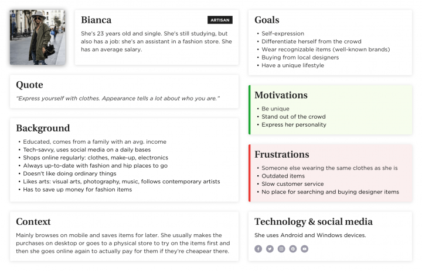

UX Case Study

1 – Project Overview
This is my UI/UX design project during UX Design Class in Purwadhika Startup School. The UX case study was done for my Post Test on Module 1 lectured by Herru Adi Vian. The brief of the case study is about how to create an application that help craftsman selling their product. User (the craftsman) can register their products and make buying and selling transaction easily. Here’s a little background about the situation: In the midst of uncertainty like this, many souvenir sellers/craftsman in tourism locations have been affected by the pandemic. Their merchandise is not selling well and their business are threatened with bankruptcy. This case study was solved individually. The concept is mainly intended to identify existing problems and to suggest potential solutions or alternative approaches. I use Design Thinking method to help me guide understanding user’s need, define the problem, and deliver the right solution that works. Design Thinking Step by Step: Empathize – Define – Ideation – Prototype
2 – Empathize: Understand the user
The craftsmen whose businesses suffer losses due to the drastically reduced number of visitors.
Here’s my findings based from the brief given:
- When the pandemic will end is uncertain
- The enactment of the psbb disrupts store operating hours
- The number of visits by local and foreign tourists decreased drastically resulting in reduced income
- The threat of business bankcruptcy
3 – Define: What to solve and who are the users?
As a part of the design thinking process, I defined the users, needs, and insight.
First, I need to define the user I’m targeting. Here are my findings based from the brief given:
- The craftsman business is in danger of going bankrupt
- Store operating hours are disrupted due to the implementation of PSBB
- The number of shopgoers has drastically reduced as tourists are temporariy banned from entering tourist spots
- Business are threatened with making no profits during the pandemic
What the user needs:
- A platform to display and sell products without having to meet with customers directly
- A platform where user’s customers can browser the product from everywhere in Indonesia without require them to travel
- A platform to do transaction and grow their sales
- A platform where user and their customer are connected easily
3 – User Personal

How might we :
Based on the user, his need, and my insight below are the How Might We:
- How might we help the craftsman to sell their product?
- How might we help small-to-medium business survive during the pandemic?
4 – Mindmap

5 – Userflow
6 – Crazy 8 Method